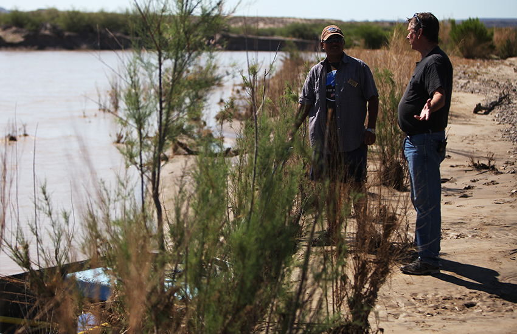
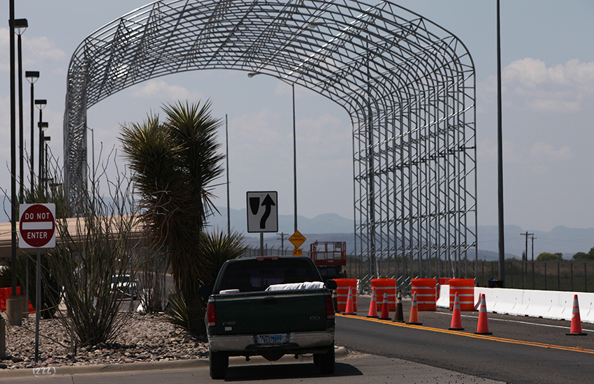
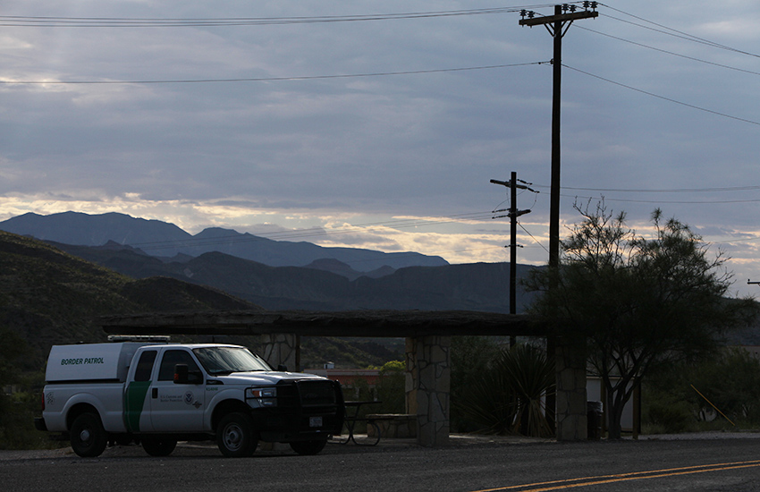
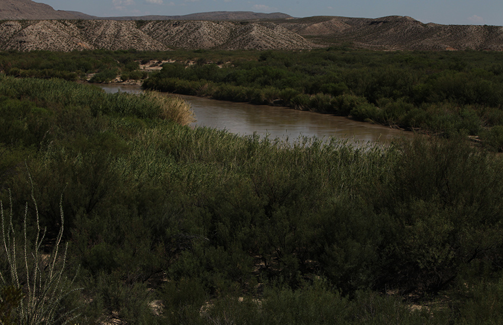
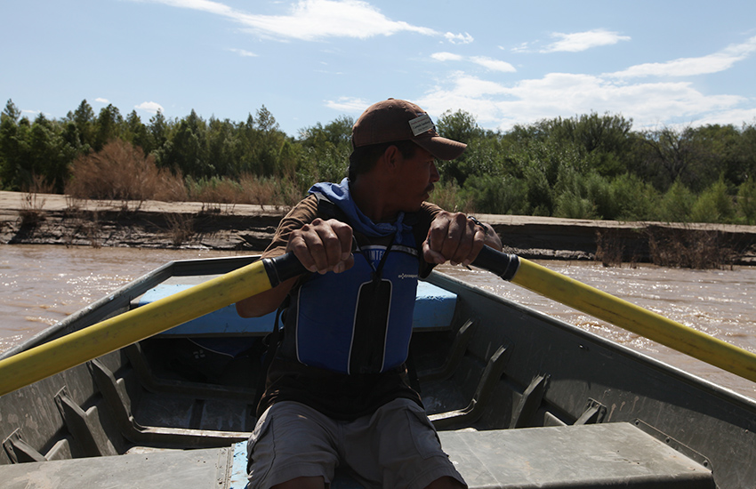
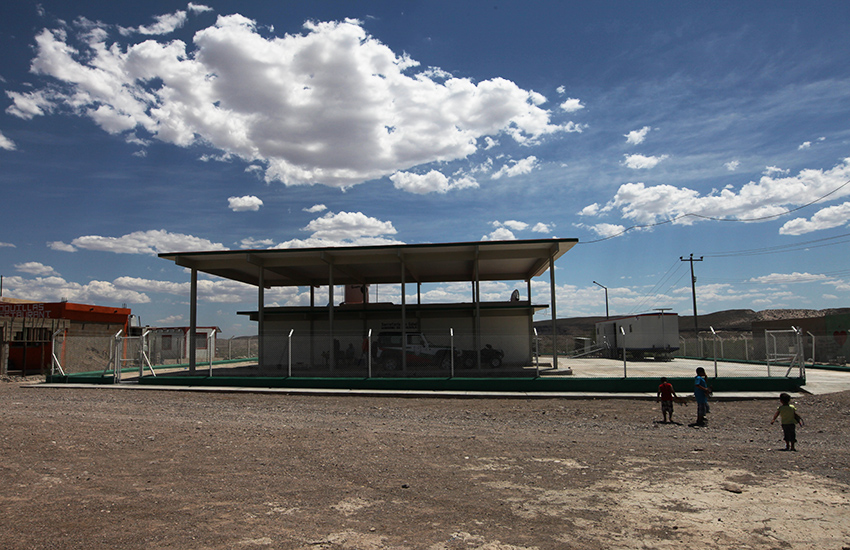
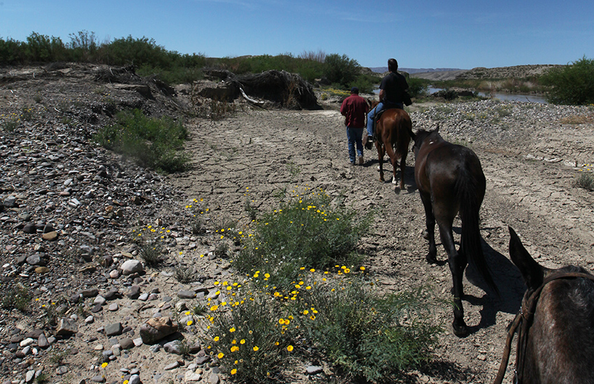
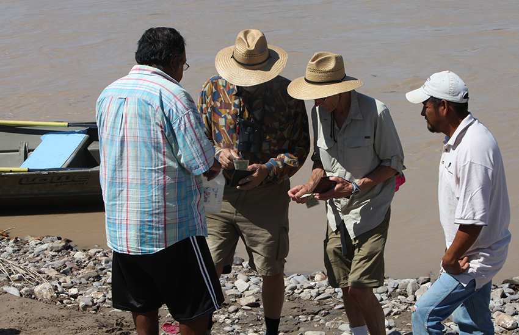

Section 1
Section Title Here
Caption one info here teekay and if it goes to two lines. Caption one info here teekay and if it goes to two lines. Credit info teekay.
It’s 1:30 am on a Saturday. Emily Little is standing inside a blue aluminum-sided trailer on a Far West Texas ranch. She is playing beer pong, a drinking game that involves bouncing a Ping-Pong ball into a cup. About 60 high school students are packed inside with her; some are pounding whiskey shots in the kitchen, others are dancing to TLC’s “Creep” in the living room. Graduation is a month away and the “senior sunrise” party is roaring. One of Little’s girlfriends is making out with a boy in a truck, hoping to make another boy jealous. In the scrub brush expanse between the two closest towns of Alpine, population 6,000, and Marathon, population 550, the high schoolers think they’re cleverly hidden away deep in the desert.
Under a pitch-black sky about 200 yards away in the Chihuahua desert idles the Terrahawk, a high-tech surveillance van that looks like it rolled off the set of Men in Black. A bizarre scissor-lift tower protrudes from the roof of the van, 25 feet into the air for birds-eye views. Inside is an infrared thermal imaging camera used for night vision and a high-powered laser for tracking multiple moving targets simultaneously. A local sheriff’s deputy has been sitting in the van for roughly three hours, quietly watching the kids and awaiting orders to bust the party.
Ronny Dodson, 52, the Brewster County sheriff and the man who is overseeing the surveillance of the party that night, says he fell in love with the Terrahawk when he first saw it in 2009 at a Sheriff’s conference in Corpus Christi. But the $300,000 sticker price was unaffordable -- until he heard about a federal immigration-related grant called “Operation Stonegarden” meant to help local authorities “secure the border.” Dodson won one of the grants that same year and used it to buy his Terrahawk.
Dodson delights in recounting the Terrahawk’s first days, like when they suddenly turned its floodlights onto a curious, but unsuspecting college girl loitering outside a local university football game “Wahoo. God dang she takes off running,” or when deputies caught three guys smoking pot behind the Pizza Hut and to dazzle them later told the culprits that the vehicle spied on them from a half a mile away. “Of course they told everyone in town!”
Caption one info here teekay and if it goes to two lines. Caption one info here teekay and if it goes to two lines. Credit info teekay.
The one big problem with the Terrahawk, is that its raison d’etre was to help stop dangerous border security threats — but as Dodson is the first to point out, there isn’t much of that to be done in these parts.
Dodson oversees a territory that spans more miles of border with Mexico than any other county in the country; it’s the largest county anchoring the vast region in Far West Texas known as “Big Bend” because of the 90-degree turn in the Rio Grande. Big Bend’s lonesome terrain has long attracted writers searching for extreme settings and thick characters, including most recently Cormac McCarthy who set his most of his book “No Country for Old Men,” where a local sheriff follows a Mexican hit man (played by Javier Bardem in the movie version) who crosses the border into a sepia-tinged desert wasteland and slaughters people with chilling efficiency as he tracks stolen drug money.
The reality is almost exactly the opposite. Brewster County has seen three homicides since 2000. All have been committed by locals. Border apprehensions in Big Bend remain the lowest of all southwestern Border Patrol sectors.
Big Bend’s salvation has been its isolation, which, mirrored by an even greater emptiness on the Mexican side, has been it its one consistent narrative in both fiction and reality. The bilateral solitude has made it a haven for astronomers finding the darkest skies in the lower 48; a healing grounds for stressed-out or chronically ill looking to dissolve themselves along the Rio’s natural hot springs, and one of the last fenceless frontiers for coyotes, roadrunners, and humans crisscrossing the Chihuahua countryside.
But over the past decade, the free-roaming enclave where people go to “get away from it all” has been slip-sliding into an occupied territory, a byproduct of the three decade-long build up of immigration enforcement.
Back in the trailer house, Little is focused on her Ping-Pong aim, when suddenly a flash and a glimpse of red, white and blue lights catches her eye. “Cops!” she screams, dropping her ball. Teenagers flee every which way, tripping over each other as they climb out of the trailer house windows and as they squeeze through its narrow front door.
The Terrahawk greets them with floodlights. The faster kids get further away but the deputy inside the van pinpoints laser red dot on their backs, and radios in coordinates to other officers who scoop them up, one by one.
“Sheriff’s Office!” the deputies yell. “Get on the ground!” Pistols drawn, the officers go inside the trailer house and push the teens down onto the beer-soaked floor. One officer quickly scoops up a girl running in stilettos along a gravel road. Another shoots and fires a Taser at Little, but electrified prongs fall short. The place is crawling with nearly a dozen officers in trucks, patrol cars and ATVs.
“We’re high school kids!" shouts one of the students. "Calm down we don’t have assault rifles!”
As they capture the teenagers, the deputies sit them on the ground, several with hands cuffed behind their backs, and issue them citations for consumption or possession of alcohol by a minor (twenty one were issued that night). Kelby Sines, a sophomore at the time, later said he understands that underage drinking is illegal. But he added that felt like he had been netted in a major raid, not a busted high school party. “They treated us like illegal immigrants,” he said.
It is an apt description. Even though it’s one of the least built-out border regions, locals say the hunt for illegal activity has transformed their cherished small government way of life. U.S. Border Patrol's force of agents based in the local Big Bend sector grew from less than 200 in 2000 to more than 600 in 2013. The Immigration and Customs Enforcement Agency’s new Homeland Security Investigations unit has placed and undisclosed number of uniformed and undercover “HSI” agents in Big Bend in recent years. Texas Parks and Wildlife Dept. now has 12 game wardens in the area adding to the significant bevy of Texas Department of Public Safety officers patrolling the streets and the skies for border security issues. They’ve built new buildings, orchestrated temporary traffic stops, and undergone several surveillance operations.
Large busts of relatively minor crimes are spreading paranoia. Earlier last year, a bevy of local and federal HSI officers spent six months staking out a former Sul Ross University football player Graylen Daniel, 23, and his brother Quincey Boney, 26, who were suspected of dealing marijuana. After several undercover surveillance operations (including sniffing outside doors after they left buildings) and a 6am bust with machine guns, Boney ended up with a misdemeanor charge of personal possession of less than two ounces of marijuana.
Sheriff Dodson talks of similar raids that were “jokes” such as one recent bust that featured dozens of federal and local officers and a helicopter raid on one unarmed teenager at his home for viewing child pornography. Dodson says it would have taken two maybe three of his officers to arrest him.
“I think they’re just throwing money at the border for nothing,” Dodson told the Texas Observer, a monthly magazine, earlier this year. As an elected official in Far West Texas, Dodson has never and would never be a public fan of Big Brother. But he’s amped up he’s rhetoric recently and has become one of the most outspoken critics of the default immigration strategy of the United States to secure the border.
Section 2
Section Title Here
On this day, like most, Dodson is driving around his county, which is larger than the state of Connecticut, in his white dodge ram truck. Looking every bit the part of a West Texas sheriff, Dodson wears a desert-tan short-sleeved shirt, crisply pressed, topped by an off-white cowboy hat. He rarely leaves home without his brown leather holster carrying a silver-handled 45 automatic pistol. A big man (6’1”, 235 pounds), he speaks with a soothing drawl, the same one that pilots use to make turbulence sound less worrisome.
“We’ve become a government town,” Dodson says about the border build up as he steers his truck away from his office in Alpine looking for places to hide new border security surveillance cameras (bought with federal money). He says he thinks federal plans to double border patrol again and state plans possibly send another 500 state officers to the Texas border are insane.
The buildup has been occurring for the past three decades since 1980, when the entire Southwestern border had only half as many officers as half what’s in Big Bend today. The United States now spends about $18 billion a year on immigration enforcement. This is more than all primary federal criminal law enforcement agencies combined, including the Drug Enforcement Agency, Federal Bureau of Investigations, and the Bureau of Alcohol and Tobacco, Firearms and Explosives, according to a 2013 study by the Migration Policy Institute, a nonpartisan research group in Washington.
Immigration and Customs Enforcement, or ICE, currently spends $11 billion annually on border security. This money goes not just towards reinforcing the border and targeting undocumented immigrants, but also toward trying to stem the flow of drugs entering the country.
Texas has built its own $450 million dragnet to supplement the federal government’s already robust border security efforts. With these funds, the state has bought five helicopters and a $7.4 million surveillance aircraft. It also purchased six armed patrol boats with 50 caliber machine guns, 326 patrol vehicles, temporary border checkpoints and an estimated 500 remote surveillance cameras and sensors.
Each time there is a spike in border crossers, such as the flood of Cuban refugees who made their way to Florida in jerry-rigged boats in 1980 to the recent surge in unaccompanied child migrants crossing into Texas’ Rio Grande Valley, or every time there’s been a national security lapse such as the Sept. 11 attacks, the natural reaction as been to secure the southwestern border.
“The whole system is falling apart and it’s just wasting taxpayer money.”
“BOOM, we’ve got double the size of border patrol,” says Dodson of the border expansion in Big Bend after the attacks on Sept. 11, 2001. “BOOM, double the number of state officers! BOOM we’ve got double everything down here.”
And since immigration reform efforts began with former President George W. Bush in 2000, border security has become the premise to any possible path to legalization for the estimated 11 million undocumented living in the country. The 2013 Senate-passed $46 billion “Border Surge” bill included another doubling of Border Patrol along with specific increases in Big Bend: 29 mobile surveillance system; 1105 seismic, imaging and infrared ground sensors; and 131 thermal imaging systems and night vision goggles.
Dodson suspects more is coming and he wants to let those in Washington know the status quo of more guns and people is not the solution and in the meantime, it’s disrupting a way of life.
“The whole system is falling apart and it’s just wasting taxpayer money,” he says.
Dodson’s frustration with the federal incursion is rooted in something deeper than fiscal responsibility. As we drive around, the sun bears down across a rolling sea of volcanic rubble, cacti and brush. The desert teams with life while looking impossibly dry.
This terrain only attracts a certain frontiersman-type personality, people for whom the barrenness is less lonely than free and pure. Like that of most locals, Dodson’s is a mixed lineage. His relatives were bootleggers and lawmen, Mexicans and Americans. The border was in decades past seen less as a barrier than a place of commerce, he says. He shakes his head at the perception of this as a dangerous place -- a view fostered both in Hollywood and in Washington.
“Let me tell you how you’re going to get hurt here,” he says. “You’re going to walk off the desert without enough water. You’re going to get snake bit.”
For as much as Dodson has emerged into an outspoken critic of the build-up, he is also become a tremendous beneficiary of it. Aside from his Terrahawk, he bought a new Chevrolet Silverado and Ford Explorer for his department. With immigration-control money, he paid for Vortex ground sensors, RTVs, radios, and hundreds of hours of overtime pay for his deputies with federal border security money. His sheriff’s department has collected more than $600,000 dollars per year on average from one federal grant program since 2008. Without these funds his annual budget amounts to about $700,000.
Dodson is quick to add that his budget is but a drop in the bucket compared to the federal dollars pouring into other agencies nearby, but he’s not stopped asking the federal government for border security grants.
Slideshow Headline Goes Here
- 
- 

- 
- 
- 
- 
- 
- 